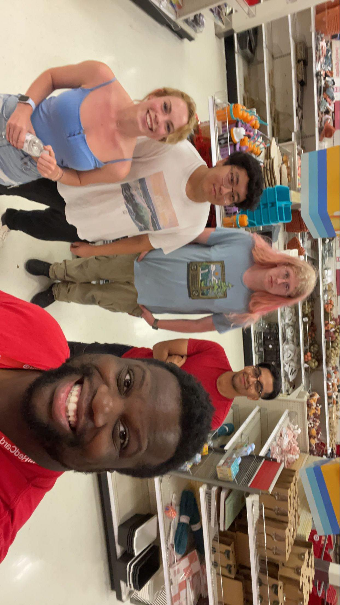

Me (2nd from the left) with some friends I made while working over the summer.
Personal Background: Born In Los Angeles, California, but moved to Cary, North Carolina when I was still a baby, so I’m about 2-3 hrs out from home, have 1 older sibling. As far as interests go, my biggest one is music more so following the scene than playing an instrument, the vast amount of artists out there is crazy to me.
Professional Background: Up until this past summer, I had been a full time college student and never had a real job just cause I didn’t think I had the time management skills for summer classes and a job, but I got hired by Target and worked there full time for the entire summer, as seen in the picture above, it was a great opportunity both professionally and to make new friends.
Academic Background: I’m currently a junior here at UNC Charlotte majoring in Computer Science, with a concentration in Software, Systems, and Networks pursuing a bachelor’s degree.
Primary Computer Platform: Desktop with Windows 10/11
Courses I'm Taking and Why:
ITSC-3166 Intro to Computer Networks: It’s required for my major but I also want to do networking specifically as my career so I wanted to take a course related to that.
MATH-2164 Matrices and Linear Algebra: required for my major
LBST-1105 Arts & Society: seemed like an easy filler elective
ITIS-3135 Web-Based Application Design and Development: required for my major
LBST-2301 Critical Thinking & Communication - LEADS (RELS): required but the course content seems like it could be useful for everyone
Funny/Interesting Thing to Remember Me by:I have never broken a bone in my body.
I'd Also Like to Share: Let me know any artists you listen to, I want to find more genres and people who I would have never found by myself.